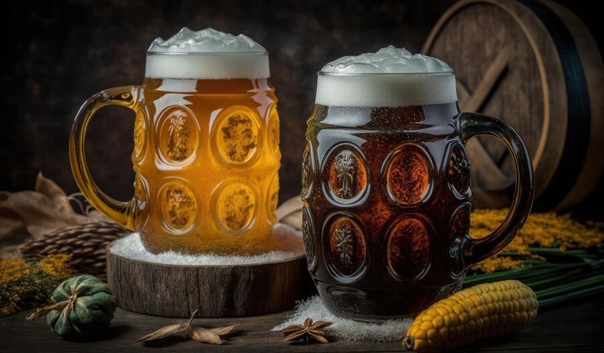

Descoperă orașul Pilsen - O călătorie în Cehia
Pilsen este un oraș cunoscut pentru istoria sa berară și are o serie de atracții interesante pentru vizitatori:
-

Fabrica de Bere Pilsner Urquell - Tradiție berară
Descoperă procesul de producție a berii în una dintre cele mai faimoase fabrici de bere din lume.
-

Piața centrală din Pilsen - Centrul orașului
Explorează atmosfera vibrantă a pieței centrale, înconjurată de arhitectură impresionantă.
-

Catedrala din Pilsen - Eleganță sacrală
Admirați arhitectura gotică a catedralei și urcați în turn pentru o panoramă a orașului.
-

Muzeul Tehnic din Pilsen - Explorare științifică
Descoperiți expozițiile interactive care explorează inovațiile tehnologice și științifice.
-

Parcurile din Pilsen - Relaxare în natură
Bucurați-vă de spațiile verzi și parcurile frumoase ale orașului pentru o odihnă plăcută.
Concluzii
Pilsen oferă o combinație interesantă de istorie berară, cultură și arhitectură, creând o experiență memorabilă.